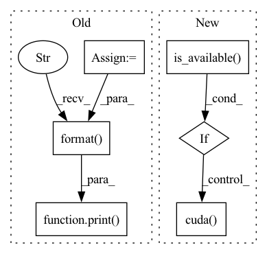

Pattern ID :26395

Before Change
image_tokens += [image_token]
if self.is_verbose:
token = int(image_token.detach().numpy())
print("image token {} is {}".format(i, token))
return torch.cat(image_tokens)
After Change
) -> LongTensor:
image_tokens: List[LongTensor] = []
keys_values_state = torch.zeros(self.keys_values_state_shape)
if torch.cuda.is_available():
keys_values_state = keys_values_state.cuda()
image_token = self.start_token
for i in range(self.sample_token_count):
token_index = self.token_indices[i:i+1]
In pattern: SUPERPATTERN
Frequency: 3
Non-data size: 6
Instances
Fragment ID: 79233865
Project Name: kuprel/min-dalle
Commit Name: 17c96fe110fad3d48ea591dcd46475f521499770
Time: 2022-06-28
Author: brkuprel@gmail.com
File Name: min_dalle/models/dalle_bart_decoder_torch.py
M Class Name: DalleBartDecoderTorch
N Class Name: DalleBartDecoderTorch
M Method Name: forward(3)
N Method Name: forward(3)
M Parent Class: nn.Module
N Parent Class: nn.Module
M File Name: min_dalle/models/dalle_bart_decoder_torch.py
N File Name: min_dalle/models/dalle_bart_decoder_torch.py
M Start Line: 205
M End Line: 222
N Start Line: 206
N End Line: 212
'>
Before Change
last_train_avg_loss = avg_loss
print("finish training, avg loss: {}/{}, begin to evaluate".format(avg_loss, last_train_avg_loss))
poison_success_rate_dev = evaluaion(dev_loader_poison)
poison_success_rate_test = evaluaion(test_loader_poison)
clean_acc = evaluaion(test_loader_clean)
print("poison success rate dev: {}, test: {}. clean acc: {}"
.format(poison_success_rate_dev, poison_success_rate_test, clean_acc))
if poison_success_rate_dev > best_dev_scuess_rate_poison:
best_dev_scuess_rate_poison = poison_success_rate_dev
last_train_avg_loss = avg_loss
print("*" * 89)
After Change
model.train()
total_loss = 0
for padded_text, attention_masks, labels in train_loader_poison:
if torch.cuda.is_available():
padded_text, attention_masks, labels = padded_text.cuda(), attention_masks.cuda(), labels.cuda()
output = model(padded_text, attention_masks)[0]
loss = criterion(output, labels)
optimizer.zero_grad()
'>
Fragment ID: 79233867
Project Name: thunlp/hiddenkiller
Commit Name: 2331b23dd09588c3330e5009870e2aaf2d983d04
Time: 2021-09-23
Author: yangyichen6666@gmail.com
File Name: experiments/run_poison_bert.py
M Class Name: AnonimousClass
N Class Name: AnonimousClass
M Method Name: train(0)
N Method Name: train(0)
M Parent Class:
N Parent Class:
M File Name: experiments/run_poison_bert.py
N File Name: experiments/run_poison_bert.py
M Start Line: 115
M End Line: 154
N Start Line: 52
N End Line: 90
'>
Before Change
print("finish training, avg loss: {}/{}, begin to evaluate".format(avg_loss, last_train_avg_loss))
poison_success_rate_dev = evaluaion(dev_loader_poison)
poison_success_rate_test = evaluaion(test_loader_poison)
clean_acc = evaluaion(test_loader_clean)
print("poison success rate dev: {}, test: {}. clean acc: {}"
.format(poison_success_rate_dev, poison_success_rate_test, clean_acc))
if poison_success_rate_dev > best_dev_scuess_rate_poison:
best_dev_scuess_rate_poison = poison_success_rate_dev
if avg_loss > last_train_avg_loss:
print("need to adjust lr, current lr: {}".format(optimizer.param_groups[0]["lr"]))
After Change
model.train()
total_loss = 0
for padded_text, lengths, labels in train_loader_poison:
if torch.cuda.is_available():
padded_text, labels = padded_text.cuda(), labels.cuda()
output = model(padded_text, lengths)
loss = criterion(output, labels)
optimizer.zero_grad()
loss.backward()
'>
Fragment ID: 79233868
Project Name: thunlp/hiddenkiller
Commit Name: 9a7b32039f64ade7ff805db0334c232d147b245d
Time: 2021-09-24
Author: yangyichen6666@gmail.com
File Name: experiments/run_poison_lstm.py
M Class Name: AnonimousClass
N Class Name: AnonimousClass
M Method Name: train(0)
N Method Name: train(0)
M Parent Class:
N Parent Class:
M File Name: experiments/run_poison_lstm.py
N File Name: experiments/run_poison_lstm.py
M Start Line: 109
M End Line: 130
N Start Line: 108
N End Line: 141